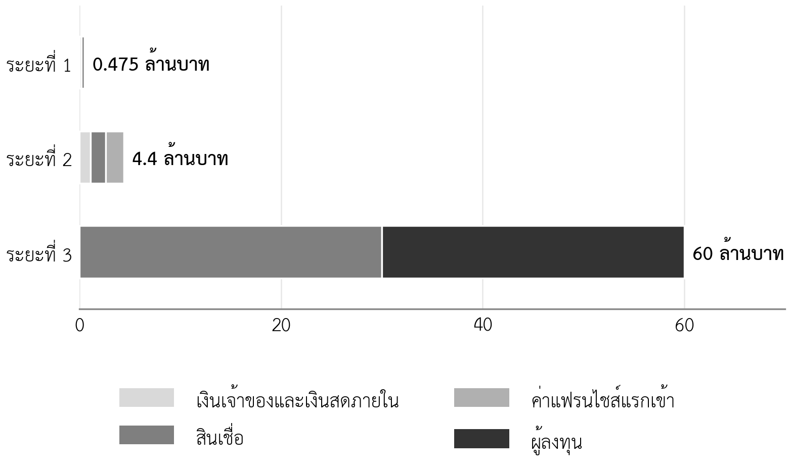

- ระบุจำนวนเงินที่ต้องการ ช่วงเวลา และการใช้เงินจากประมาณการทางการเงินได้
- เปรียบเทียบเงินทุนแบบหนี้กับแบบทุน และเลือกให้เหมาะกับลักษณะของธุรกิจได้
- อธิบายแหล่งเงินทุนสำหรับผู้ประกอบการในประเทศไทยและเงื่อนไขหลักได้
- เลือกแหล่งเงินทุนให้เหมาะกับแต่ละระยะของการเติบโตได้
- เตรียมหลักฐานตามหลัก 5C สำหรับการขอสินเชื่อได้
- คำนวณมูลค่ากิจการก่อนและหลังการลงทุน และสัดส่วนความเป็นเจ้าของที่ลดลงได้
- อธิบายบทบาทของเทคโนโลยีและนวัตกรรมในการขยายธุรกิจได้
ความนำ
บทที่ 10 และบทที่ 11 ตอบว่าธุรกิจใช้เงินเท่าใด และจะสร้างเงินสดคืนได้เมื่อใด บทนี้ตอบคำถามที่ตามมา คือเงินนั้นจะมาจากไหน ผู้ประกอบการมักคิดถึงแหล่งเงินทุนเป็นคำถามแรก แต่ในแผนธุรกิจ คำถามนี้ควรมาหลังสุด เพราะแหล่งเงินทุนที่เหมาะสมขึ้นกับจำนวนเงิน ช่วงเวลา ความเสี่ยง และรูปแบบของกระแสเงินสดที่วิเคราะห์ไว้แล้วในบทก่อนหน้า ธุรกิจที่ยังไม่รู้ว่าต้องการเงินเท่าใดและจะคืนได้อย่างไร จะเลือกแหล่งเงินทุนผิดได้ง่าย
บทนี้ยังกลับมาที่โจทย์ของรายวิชา ถ้าหมูปิ้งอาจารย์ตั้มจะขายให้ได้วันละ 3 ล้านบาท เงินทุนที่ต้องใช้ในแต่ละระยะต่างกันหลายเท่า และแหล่งเงินทุนที่เหมาะกับแต่ละระยะก็ต่างกันด้วย ระยะที่ 1 ใช้สินเชื่อธนาคาร 3 แสนบาท ระยะที่ 3 อาจต้องใช้เงินหลายสิบล้านบาทและต้องแบ่งความเป็นเจ้าของให้ผู้ลงทุน การวางแผนเงินทุนตามระยะจึงเป็นส่วนหนึ่งของวิธีการไปถึงเป้าหมาย ไม่ใช่เรื่องที่ค่อยคิดเมื่อถึงเวลา
12.1 ต้องการเงินเท่าใด เมื่อใด และเพื่ออะไร
แผนการใช้เงิน (use of funds) คือตารางที่บอกว่าเงินที่ขอจะใช้กับรายการใด เมื่อใด และเป็นจำนวนเท่าใด ผู้ให้เงินทุกรายต้องการเห็นตารางนี้ เพราะบอกว่าเงินจะไปสร้างสิ่งที่สร้างรายได้หรือไม่ จำนวนเงินที่ขอต้องมาจากประมาณการ ไม่ใช่จากความต้องการ และควรครอบคลุมสามส่วน คือ เงินลงทุนในสินทรัพย์ ค่าใช้จ่ายก่อนเปิด และเงินทุนหมุนเวียนที่พอสำหรับเดือนที่เงินสดต่ำที่สุดในกรณีต่ำ ตารางที่ 12.1 เป็นแผนการใช้เงินของระยะที่ 1 ของกรณีศึกษา (กรณีศึกษาสมมติ)
ตารางที่ 12.1 แผนการใช้เงินและแหล่งเงินของระยะที่ 1 (บาท กรณีศึกษาสมมติ)
| การใช้เงิน | จำนวน | เดือน | แหล่งเงิน | จำนวน |
|---|---|---|---|---|
| ครัวกลาง | 250,000 | เม.ย. 2570 | เงินของคุณตั้ม | 150,000 |
| อุปกรณ์สาขาใหม่สองแห่ง | 138,000 | พ.ค. 2570 | สินเชื่อธนาคาร 5 ปี | 300,000 |
| มัดจำค่าเช่า | 12,000 | พ.ค. 2570 | เงินสดจากการดำเนินงานของสาขาเดิม | 25,000 |
| เงินทุนหมุนเวียน | 50,000 | กันไว้ตลอดปีแรก | ||
| ค่าใช้จ่ายก่อนเปิด | 25,000 | เม.ย.–มิ.ย. 2570 | ||
| รวม | 475,000 | รวม | 475,000 |
ข้อสังเกตคือเงินทุนหมุนเวียน 50,000 บาทไม่ได้คิดขึ้นลอย ๆ ในบทที่ 11 กรณีแย่ทำให้เงินสดต่ำสุดหลังลงทุนเหลือประมาณ 94,000 บาท ถ้าไม่มีเงินทุนหมุนเวียนส่วนนี้ เงินสดจะเหลือน้อยกว่าต้นทุนคงที่หนึ่งเดือน ผู้ให้เงินจะถามเสมอว่าเงินทุนหมุนเวียนคำนวณมาอย่างไร
12.1.1 ข้อผิดพลาดที่พบบ่อยในการขอเงินทุน
แผนของนิสิตและผู้ประกอบการรายใหม่มักผิดพลาดในส่วนความต้องการเงินทุนด้วยรูปแบบเดิมซ้ำ ๆ ตารางที่ 12.2 รวบรวมข้อผิดพลาดที่พบบ่อยและผลที่เกิดเมื่อผู้ให้เงินอ่าน ข้อผิดพลาดส่วนใหญ่ไม่ได้ทำให้แผนผิดในทางตัวเลข แต่ทำให้ผู้ให้เงินไม่เชื่อว่าผู้ขอเงินเข้าใจธุรกิจของตนเอง
ตารางที่ 12.2 ข้อผิดพลาดที่พบบ่อยในการขอเงินทุน
| ข้อผิดพลาด | สิ่งที่ผู้ให้เงินเห็น | วิธีแก้ |
|---|---|---|
| ขอเงินเป็นตัวเลขกลม ๆ เช่น 1 ล้านบาท | จำนวนเงินไม่ได้มาจากการคำนวณ | ขอตามแผนการใช้เงินที่รวมแล้วจริง |
| ขอเงินพอดีกับเงินลงทุน ไม่มีเงินทุนหมุนเวียน | ธุรกิจจะขาดเงินสดในเดือนแรก ๆ | เพิ่มเงินทุนหมุนเวียนจากกรณีต่ำ |
| ขอเงินมากเกินความจำเป็นเพื่อความสบายใจ | ภาระดอกเบี้ยหรือการเสียหุ้นที่ไม่จำเป็น | แยกเงินสำรองที่จำเป็นออกจากเงินที่ไม่มีแผนใช้ |
| ไม่มีเงินของเจ้าของร่วมลงทุน | เจ้าของไม่ได้รับความเสี่ยงร่วม | แสดงเงินที่เจ้าของลงทุนเองหรือทรัพย์สินที่นำมาใช้ |
| เลือกแหล่งเงินไม่ตรงกับธุรกิจ เช่น เสนอผู้ลงทุนร่วมสำหรับร้านอาหารร้านเดียว | ผู้ขอเงินไม่เข้าใจว่าผู้ให้เงินต้องการอะไร | ใช้ตารางที่ 12.3 และตารางที่ 12.4 |
| ไม่บอกว่าจะคืนเงินหรือให้ผลตอบแทนอย่างไร | ผู้ให้เงินไม่เห็นทางได้เงินคืน | ใช้ DSCR สำหรับสินเชื่อ และวิธีได้เงินคืนสำหรับผู้ลงทุน |
12.2 หนี้กับทุน
เงินทุนจากภายนอกแบ่งเป็นสองประเภทใหญ่ เงินทุนแบบหนี้ (debt financing) เช่น สินเชื่อธนาคาร ต้องจ่ายคืนพร้อมดอกเบี้ยตามกำหนด ไม่ว่าธุรกิจจะมีกำไรหรือไม่ แต่ผู้ให้กู้ไม่ได้เป็นเจ้าของธุรกิจ เงินทุนแบบทุน (equity financing) เช่น เงินจากผู้ลงทุน ไม่ต้องจ่ายคืนตามกำหนด แต่ผู้ลงทุนได้ส่วนแบ่งความเป็นเจ้าของ ส่วนแบ่งกำไรในอนาคต และมักมีสิทธิในการตัดสินใจบางเรื่อง (ตารางที่ 12.3)
ตารางที่ 12.3 เปรียบเทียบเงินทุนแบบหนี้กับแบบทุน
| ประเด็น | หนี้ | ทุน |
|---|---|---|
| ต้องจ่ายคืน | ต้องจ่ายตามงวด | ไม่ต้องจ่ายคืนตามกำหนด |
| ต้นทุนของเงิน | ดอกเบี้ยตามสัญญา | ส่วนแบ่งกำไรและมูลค่ากิจการในอนาคต ซึ่งอาจสูงมากถ้าธุรกิจสำเร็จ |
| ความเป็นเจ้าของ | เจ้าของเดิมยังถือครบ | เจ้าของเดิมถือน้อยลง |
| สิ่งที่ผู้ให้เงินสนใจ | ความสามารถชำระหนี้และหลักประกัน | โอกาสเติบโตและวิธีได้เงินคืน |
| เหมาะกับ | ธุรกิจที่มีกระแสเงินสดสม่ำเสมอ | ธุรกิจที่ต้องใช้เงินมากก่อนมีรายได้ และเติบโตได้สูง |
| ความเสี่ยงต่อผู้ประกอบการ | ถ้าผ่อนไม่ได้ อาจเสียหลักประกันหรือทรัพย์สิน | สูญเสียการควบคุมบางส่วน |
หลักที่ใช้เลือกง่ายที่สุดคือดูรูปแบบของกระแสเงินสด ถ้าธุรกิจสร้างเงินสดได้สม่ำเสมอตั้งแต่ช่วงแรก หนี้มักถูกกว่า เพราะผู้ประกอบการเก็บความเป็นเจ้าของไว้ได้ทั้งหมด แต่ถ้าธุรกิจต้องใช้เงินมากและไม่มีรายได้เป็นเวลานาน การกู้จะสร้างภาระค่างวดในช่วงที่ยังไม่มีเงินสดจ่าย เงินทุนแบบทุนจึงเหมาะกว่า ร้านหมูปิ้งในระยะที่ 1 มีกระแสเงินสดสม่ำเสมอจากสาขาเดิม จึงเหมาะกับสินเชื่อ ส่วนโรงงานในระยะที่ 3 ต้องลงทุนมากก่อนมีรายได้ จึงอาจต้องใช้ทั้งสองแบบร่วมกัน
12.3 แหล่งเงินทุนในประเทศไทย
ผู้ประกอบการในประเทศไทยมีแหล่งเงินทุนหลายแบบ แต่ละแบบเหมาะกับขนาดของเงิน ระยะของธุรกิจ และรูปแบบการจดทะเบียนต่างกัน ตารางที่ 12.4 สรุปแหล่งเงินทุนหลัก เงื่อนไขของแต่ละแหล่งเปลี่ยนตามนโยบายและโครงการในแต่ละปี ผู้เขียนแผนต้องตรวจเงื่อนไขล่าสุดจากหน่วยงานทุกครั้ง
ตารางที่ 12.4 แหล่งเงินทุนหลักสำหรับผู้ประกอบการในประเทศไทย
| แหล่งเงินทุน | ประเภท | เหมาะกับ | ข้อควรรู้ |
|---|---|---|---|
| เงินของผู้ประกอบการ ครอบครัว และเพื่อน | ทุนหรือหนี้ | ทุกระยะ โดยเฉพาะช่วงเริ่มต้น | ควรทำข้อตกลงเป็นลายลักษณ์อักษรเพื่อป้องกันความขัดแย้ง |
| สินเชื่อธนาคารพาณิชย์ | หนี้ | ธุรกิจที่มีประวัติยอดขายและหลักประกัน | พิจารณาตามหลัก 5C (หัวข้อ 12.5) |
| ธนาคารเฉพาะกิจของรัฐ เช่น ธนาคารพัฒนาวิสาหกิจขนาดกลางและขนาดย่อมแห่งประเทศไทย | หนี้ | SMEs ที่ต้องการเงื่อนไขเฉพาะ | มีโครงการตามนโยบายรัฐเป็นระยะ |
| การค้ำประกันสินเชื่อของ บสย. | ส่วนเสริมของหนี้ | SMEs ที่หลักประกันไม่พอ | บสย. ค้ำประกันสินเชื่อร่วมกับธนาคาร มีค่าธรรมเนียมค้ำประกัน (บรรษัทประกันสินเชื่ออุตสาหกรรมขนาดย่อม, ม.ป.ป.) |
| ทุนสนับสนุนจากรัฐ เช่น สำนักงานนวัตกรรมแห่งชาติ | ทุนให้เปล่าหรือทุนที่มีเงื่อนไข | ธุรกิจที่มีนวัตกรรมชัดเจน | สนับสนุนทั้งการบ่มเพาะ ทุน การขยายตลาด และการร่วมลงทุน (สำนักงานนวัตกรรมแห่งชาติ, ม.ป.ป.) |
| นักลงทุนอิสระ | ทุน | ธุรกิจระยะแรกที่เติบโตได้สูง | ลงทุนด้วยเงินส่วนตัว มักให้คำแนะนำด้วย |
| ผู้ลงทุนร่วม | ทุน | ธุรกิจที่พิสูจน์ตลาดแล้วและต้องการเงินมากเพื่อขยาย | คาดหวังการเติบโตสูงมากและวิธีได้เงินคืนที่ชัดเจน |
| คราวด์ฟันดิงแบบหลักทรัพย์ | ทุนหรือหนี้ | บริษัทที่มีฐานลูกค้าหรือชุมชนผู้สนับสนุน | ต้องเป็นบริษัทและเสนอขายผ่านผู้ให้บริการที่ ก.ล.ต. ให้ความเห็นชอบ (อินโฟเควสท์, 2566) |
| คู่ค้า เช่น เครดิตจากผู้จัดหา และค่าแฟรนไชส์ | หนี้ระยะสั้นหรือเงินรับล่วงหน้า | ธุรกิจที่มีอำนาจต่อรองกับคู่ค้า | ไม่ต้องขอสินเชื่อ แต่ต้องรักษาความสัมพันธ์และส่งมอบตามสัญญา |
แหล่งเงินทุนที่ผู้ประกอบการรายย่อยมองข้ามบ่อยคือแหล่งในแถวสุดท้าย ผู้จัดหาที่ให้เครดิต 15 ถึง 30 วันช่วยลดเงินทุนหมุนเวียนที่ต้องใช้ ส่วนค่าแฟรนไชส์แรกเข้าเป็นเงินสดที่ได้รับก่อนที่ร้านแม่ต้องส่งมอบบริการทั้งหมด ซึ่งเป็นแหล่งเงินทุนที่สำคัญของระยะที่ 2 ในกรณีศึกษา
12.4 แหล่งเงินทุนตามวงจรการเติบโต
12.4.1 งานวิจัยที่ใช้เป็นกรอบคิด
Berger และ Udell (1998) เสนอแนวคิดวงจรการเติบโตทางการเงินของธุรกิจขนาดเล็ก ซึ่งมองว่าโครงสร้างเงินทุนที่เหมาะสมเปลี่ยนไปตามขนาดและอายุของธุรกิจ ธุรกิจที่ใหม่และเล็กมีข้อมูลให้ผู้ให้เงินตรวจสอบได้น้อย จึงพึ่งเงินของเจ้าของ ครอบครัว และนักลงทุนอิสระเป็นหลัก เมื่อธุรกิจโตขึ้นและมีประวัติ จึงเข้าถึงสินเชื่อธนาคารและผู้ลงทุนร่วมได้มากขึ้น งานของ Cassar (2004) ศึกษาธุรกิจเริ่มต้นและพบว่าการเลือกใช้เงินทุนและจำนวนเงินทุนสัมพันธ์กับขนาดของธุรกิจ โครงสร้างสินทรัพย์ รูปแบบองค์กร และแนวทางการเติบโต ผลสอดคล้องกับคำอธิบายเรื่องความไม่สมมาตรของข้อมูลระหว่างผู้ประกอบการกับผู้ให้เงิน
ข้อค้นพบทั้งสองให้บทเรียนเชิงปฏิบัติข้อเดียวกัน ผู้ให้เงินภายนอกตัดสินใจจากข้อมูลที่ตรวจสอบได้ ธุรกิจที่มีบัญชีชัดเจน ประวัติยอดขาย และหลักฐานจากการทดสอบ จะเข้าถึงเงินทุนได้มากกว่าและในเงื่อนไขที่ดีกว่า นี่คือเหตุผลที่รายวิชานี้เน้นหลักฐานตั้งแต่บทที่ 3 และด่านตรวจตั้งแต่บทที่ 6
12.4.2 แหล่งเงินทุนของกรณีศึกษาตามระยะ
ตารางที่ 12.5 วางแผนเงินทุนของกรณีศึกษาตามระยะ จำนวนเงินของระยะที่ 2 และระยะที่ 3 เป็นข้อสมมติเพื่อการสอน ซึ่งในแผนจริงต้องมาจากประมาณการรายไตรมาสและรายปีตามหลักในบทที่ 11 ภาพที่ 12.1 แสดงตัวเลขเดียวกันเพื่อให้เห็นว่าขนาดของเงินทุนเพิ่มขึ้นเป็นขั้นอย่างไร
ตารางที่ 12.5 แผนเงินทุนตามระยะของเส้นทางสู่เป้าหมาย (กรณีศึกษาสมมติ)
| ระยะ | เงินที่ต้องใช้ | แหล่งเงินหลัก | เหตุผล |
|---|---|---|---|
| 1 (2570–2571) | 475,000 บาท | เงินเจ้าของ 150,000 สินเชื่อธนาคาร 300,000 เงินสดดำเนินงาน 25,000 | มีประวัติยอดขายสามปี กระแสเงินสดสม่ำเสมอ |
| 2 (2572–2574) | 4,400,000 บาท | เงินสดสะสมระยะที่ 1 ค่าแฟรนไชส์แรกเข้า สินเชื่อบริษัทที่ บสย. ค้ำประกัน เงินสดจากการดำเนินงาน | มีหลักฐานจากด่าน 1 ค่าแฟรนไชส์เป็นเงินรับล่วงหน้า |
| 3 (2575–2579) | ประมาณ 60,000,000 บาท | สินเชื่อ 30 ล้านบาท และผู้ลงทุน 30 ล้านบาท | ต้องลงทุนโรงงานก่อนมีรายได้ เกินกำลังของหนี้เพียงอย่างเดียว |

ตารางนี้แสดงอีกครั้งว่าด่านตรวจมีหน้าที่ทางการเงินด้วย การผ่านด่าน 1 ไม่ได้เป็นเพียงหลักฐานว่าธุรกิจพร้อม แต่เป็นหลักฐานที่ธนาคารใช้พิจารณาสินเชื่อระยะที่ 2 และผลของด่าน 2 คือหลักฐานที่ผู้ลงทุนใช้ตัดสินใจในระยะที่ 3 ถ้าไม่ผ่านด่าน ธุรกิจก็จะไม่ได้เงินทุนของระยะถัดไปในเงื่อนไขที่ดี ซึ่งเป็นกลไกที่ช่วยไม่ให้ธุรกิจขยายเร็วเกินหลักฐาน
12.5 สิ่งที่ธนาคารพิจารณา
12.5.1 หลักฐานตามหลัก 5C
บทที่ 1 แนะนำหลัก 5C ที่ธนาคารใช้พิจารณาผู้กู้ (กรุงศรี เดอะโค้ช, 2567) เมื่อถึงบทนี้ นิสิตมีหลักฐานครบสำหรับทุกข้อแล้ว แผนที่ดีควรจัดหลักฐานให้ตรงกับแต่ละข้อ เพื่อให้เจ้าหน้าที่สินเชื่อหาพบได้ง่าย ตารางที่ 12.6 แสดงหลักฐานของกรณีศึกษาที่มาจากบทต่าง ๆ ของแผน
ตารางที่ 12.6 หลักฐานตามหลัก 5C ในแผนของกรณีศึกษา (กรณีศึกษาสมมติ)
| หลัก | ธนาคารถามว่า | หลักฐานในแผน | บทที่ |
|---|---|---|---|
| คุณลักษณะของผู้กู้ | ผู้กู้ซื่อตรงและมีวินัยหรือไม่ | ประวัติร้านสามปี การรายงานผลด่าน 0 ที่ไม่ผ่านตามจริง การแสดงผลภาษีมูลค่าเพิ่มตรง ๆ | 6 และ 9 |
| ความสามารถชำระหนี้ | ธุรกิจมีเงินสดพอจ่ายค่างวดหรือไม่ | DSCR กรณีฐาน 5.46 กรณีต่ำ 2.20 และกระแสเงินสดรายเดือน | 11 |
| เงินทุนของผู้กู้ | ผู้กู้ลงเงินของตนเองเท่าใด | เงินของคุณตั้ม 150,000 บาท หรือร้อยละ 33 ของเงินลงทุน | 10 |
| หลักประกัน | ถ้าผ่อนไม่ได้ ธนาคารมีอะไรรองรับ | อุปกรณ์ครัวกลางและสาขา ทรัพย์สินของคุณตั้ม หรือการค้ำประกันของ บสย. | 12 |
| สภาพแวดล้อม | ตลาดและเศรษฐกิจเอื้อหรือไม่ | ขนาดตลาด แนวโน้ม และคู่แข่ง | 4 และ 5 |
ตารางนี้ยังเป็นการตรวจความสมบูรณ์ของแผนด้วย ถ้าหลักข้อใดไม่มีหลักฐาน แสดงว่าแผนยังขาดส่วนนั้น ข้อที่นิสิตมักขาดคือคุณลักษณะของผู้กู้ ซึ่งดูเหมือนพิสูจน์ด้วยเอกสารไม่ได้ แต่ในความเป็นจริง แผนที่รายงานผลที่ไม่เป็นไปตามคาดอย่างตรงไปตรงมา เป็นหลักฐานด้านนี้ที่ดีที่สุด
12.5.2 เอกสารที่ควรเตรียมเมื่อยื่นขอสินเชื่อ
ธนาคารแต่ละแห่งขอเอกสารต่างกันตามประเภทสินเชื่อและรูปแบบธุรกิจ แต่โดยทั่วไปเอกสารแบ่งได้เป็นสามกลุ่ม คือ เอกสารของผู้กู้ เอกสารของธุรกิจ และเอกสารของโครงการที่ขอเงิน ผู้ขอสินเชื่อควรสอบถามรายการจากธนาคารก่อนยื่น และเตรียมให้ครบในครั้งเดียว เพราะการส่งเอกสารเพิ่มหลายครั้งทำให้การพิจารณาช้า ตารางที่ 12.7 เป็นรายการตรวจของกรณีศึกษา ซึ่งชี้ว่าเอกสารส่วนใหญ่มาจากส่วนต่าง ๆ ของแผนธุรกิจที่ทำไว้แล้ว
ตารางที่ 12.7 รายการตรวจเอกสารขอสินเชื่อระยะที่ 1 (กรณีศึกษาสมมติ)
| กลุ่ม | เอกสาร | ที่มาในแผนหรือแหล่ง |
|---|---|---|
| ผู้กู้ | บัตรประชาชนและทะเบียนบ้าน รายการเดินบัญชีย้อนหลัง | คุณตั้ม ธนาคารที่ใช้อยู่ |
| ธุรกิจ | ทะเบียนพาณิชย์ หนังสือรับรองการแจ้งสถานที่จำหน่ายอาหาร สัญญาเช่าพื้นที่ | บทที่ 9 |
| ธุรกิจ | ยอดขายและค่าใช้จ่ายย้อนหลังจากสมุดบัญชีร้าน | ข้อมูลร้าน (บทที่ 1) |
| โครงการ | แผนธุรกิจฉบับเต็มและบทสรุปผู้บริหาร | บทที่ 1 ถึงบทที่ 13 |
| โครงการ | ใบเสนอราคาอุปกรณ์และค่าปรับปรุงครัวกลาง | ตารางที่ 8.4 และตารางที่ 10.2 |
| โครงการ | ประมาณการกระแสเงินสดรายเดือนและสามสถานการณ์ | บทที่ 11 |
| โครงการ | ผลขายทดลองของด่าน 0 | บทที่ 6 |
12.6 สิ่งที่ผู้ลงทุนพิจารณาและการแบ่งความเป็นเจ้าของ
12.6.1 สิ่งที่ผู้ลงทุนต้องการเห็น
ผู้ลงทุนรับความเสี่ยงสูงกว่าธนาคาร จึงพิจารณาต่างกัน ผู้ลงทุนสนใจสี่เรื่องหลัก เรื่องแรก ตลาดใหญ่พอให้ธุรกิจเติบโตหลายเท่าหรือไม่ เรื่องที่สอง ทีมทำได้จริงหรือไม่ เรื่องที่สาม มีหลักฐานว่าลูกค้าต้องการแล้วหรือยัง เช่น ยอดขายที่เติบโต อัตราซื้อซ้ำ หรือจำนวนร้านแฟรนไชส์ที่มีกำไร เรื่องที่สี่ ผู้ลงทุนจะได้เงินคืนอย่างไรและเมื่อใด เช่น ขายหุ้นให้ผู้ลงทุนรายอื่น หรือนำบริษัทเข้าตลาดหลักทรัพย์ ร้านหมูปิ้งในระยะที่ 1 ไม่ตอบโจทย์ผู้ลงทุนส่วนใหญ่ เพราะเติบโตจำกัดและไม่มีวิธีได้เงินคืนที่ชัดเจน แต่ธุรกิจหมูหมักแช่แข็งที่มีเครือข่ายร้านค้าปลีกทั่วประเทศในระยะที่ 3 อาจตอบได้
12.6.2 มูลค่ากิจการและการแบ่งความเป็นเจ้าของ
เมื่อผู้ลงทุนให้เงินแลกกับหุ้น ต้องตกลงกันว่าบริษัทมีมูลค่าเท่าใด มูลค่ากิจการหลังการลงทุน (post-money valuation) เท่ากับเงินที่ลงทุนหารด้วยสัดส่วนหุ้นที่ผู้ลงทุนได้รับ มูลค่ากิจการก่อนการลงทุน (pre-money valuation) เท่ากับมูลค่าหลังการลงทุนหักเงินที่ลงทุน ส่วนการลดสัดส่วนความเป็นเจ้าของ (dilution) คือสัดส่วนหุ้นของผู้ถือหุ้นเดิมที่ลดลงเมื่อมีผู้ลงทุนใหม่ ตารางที่ 12.8 แสดงตัวอย่างของระยะที่ 3 เมื่อผู้ลงทุนเสนอเงิน 30 ล้านบาทในสองเงื่อนไข
ตารางที่ 12.8 ตัวอย่างมูลค่ากิจการเมื่อผู้ลงทุนให้เงิน 30 ล้านบาท (กรณีศึกษาสมมติ)
| รายการ | ข้อเสนอ ก (หุ้นร้อยละ 30) | ข้อเสนอ ข (หุ้นร้อยละ 40) |
|---|---|---|
| มูลค่าหลังการลงทุน | 30 ÷ 0.30 = 100 ล้านบาท | 30 ÷ 0.40 = 75 ล้านบาท |
| มูลค่าก่อนการลงทุน | 100 − 30 = 70 ล้านบาท | 75 − 30 = 45 ล้านบาท |
| สัดส่วนของคุณตั้มและคู่สมรสหลังลงทุน | ร้อยละ 70 | ร้อยละ 60 |
เงินเท่ากัน แต่ข้อเสนอ ข ประเมินมูลค่าบริษัทต่ำกว่าข้อเสนอ ก ถึง 25 ล้านบาท สิ่งที่ทำให้ผู้ประกอบการต่อรองได้ไม่ใช่ความต้องการของตน แต่เป็นหลักฐาน เช่น ร้านแฟรนไชส์ 100 ร้านที่มีกำไรจริง และผลขายทดลองในร้านค้าปลีกที่ผ่านเกณฑ์ ยิ่งระยะก่อนหน้าสร้างหลักฐานได้มาก มูลค่ากิจการก่อนการลงทุนยิ่งสูง และผู้ประกอบการยิ่งเสียสัดส่วนความเป็นเจ้าของน้อยลง นอกจากตัวเลข ผู้ประกอบการควรตรวจเงื่อนไขอื่นในข้อตกลงด้วย เช่น สิทธิในการตัดสินใจเรื่องสำคัญ และเงื่อนไขเมื่อบริษัทระดมทุนรอบต่อไป ซึ่งควรปรึกษาที่ปรึกษากฎหมาย
12.6.3 คำถามที่ผู้ลงทุนมักถาม
ผู้ลงทุนมักถามคำถามชุดคล้ายกัน ผู้ประกอบการที่เตรียมคำตอบไว้ล่วงหน้า และชี้ได้ว่าหลักฐานอยู่ในส่วนใดของแผน จะสร้างความเชื่อมั่นได้มากกว่าผู้ที่ตอบด้วยความรู้สึก ตารางที่ 12.9 แสดงคำถามที่พบบ่อยและส่วนของแผนที่ใช้ตอบ ซึ่งนิสิตใช้เตรียมตัวสำหรับการนำเสนอในสัปดาห์ที่ 16 ได้
ตารางที่ 12.9 คำถามที่ผู้ลงทุนมักถามและส่วนของแผนที่ใช้ตอบ
| คำถาม | สิ่งที่ผู้ลงทุนต้องการรู้ | ส่วนของแผนที่ใช้ตอบ |
|---|---|---|
| ตลาดใหญ่เท่าใด | ธุรกิจโตได้หลายเท่าหรือไม่ | TAM SAM SOM (บทที่ 4) |
| ทำไมลูกค้าจะเลือกคุณ | ความได้เปรียบที่ยั่งยืน | ตำแหน่งทางการตลาดและ VRIO (บทที่ 5 และ 6) |
| มีหลักฐานอะไรแล้ว | ลูกค้าต้องการจริงหรือไม่ | ผลสัมภาษณ์ ผลขายทดลอง ผลด่านตรวจ (บทที่ 3 และ 6) |
| ใช้เงินทำอะไร | เงินไปสร้างสิ่งที่สร้างรายได้หรือไม่ | แผนการใช้เงิน (หัวข้อ 12.1) |
| เมื่อใดจะมีกำไร | ต้องรอนานเท่าใด | จุดคุ้มทุนและประมาณการ (บทที่ 10 และ 11) |
| ถ้าไม่เป็นไปตามแผนจะทำอย่างไร | ทีมรับมือความเสี่ยงได้หรือไม่ | ทะเบียนความเสี่ยงและแผนสำรอง (บทที่ 11) |
| ผู้ลงทุนจะได้เงินคืนอย่างไร | วิธีและเวลาที่ได้ผลตอบแทน | แผนเงินทุนระยะถัดไป (หัวข้อ 12.4) |
12.7 เงินทุนของระยะที่ 2: ร้านแม่และร้านแฟรนไชส์ต้องมีกำไรพร้อมกัน
12.7.1 รายได้ของร้านแม่
บทที่ 10 คำนวณว่าร้านแฟรนไชส์ตามข้อสมมติเบื้องต้นมีกำไรเดือนละประมาณ 7,393 บาท บทนี้คำนวณอีกด้าน คือร้านแม่ได้อะไรจากร้านแฟรนไชส์แต่ละร้าน ร้านแม่ในระยะที่ 2 เป็นบริษัทที่จดทะเบียนภาษีมูลค่าเพิ่ม มีรายได้สองทาง คือส่วนต่างจากการขายหมูที่เสียบไม้และหมักแล้ว และค่าสิทธิรายเดือน ตารางที่ 12.10 แสดงว่าทั้งสองฝ่ายได้ประโยชน์เท่าใดจากร้านแฟรนไชส์หนึ่งร้าน
ตารางที่ 12.10 ประโยชน์ของร้านแม่และร้านแฟรนไชส์ต่อร้านต่อเดือน (บาท ข้อสมมติเบื้องต้น กรณีศึกษาสมมติ)
| รายการ | ราคาหมูไม้ละ 6.50 บาท (แผน) | ราคาหมูไม้ละ 7.00 บาท |
|---|---|---|
| ส่วนเกินของร้านแม่จากการขายหมู (7,800 ไม้) | 4,951 | 8,596 |
| ค่าสิทธิรายเดือน (สุทธิจากภาษี) | 1,869 | 1,869 |
| รวมที่ร้านแม่ได้ต่อร้าน | 6,820 | 10,465 |
| กำไรของร้านแฟรนไชส์ | 7,393 | 3,493 |
| จุดคุ้มทุนของร้านแฟรนไชส์ | 245 ไม้ต่อวัน | 271 ไม้ต่อวัน |
| ส่วนเกินปลอดภัยของร้านแฟรนไชส์ | ร้อยละ 18 | ร้อยละ 9.5 |
ส่วนต่างของร้านแม่คำนวณจากราคาขายหมูหักภาษีมูลค่าเพิ่ม (6.50 ÷ 1.07 = 6.07 บาท) หักต้นทุนผลิต 5.14 บาทและค่าขนส่ง 0.30 บาท ได้ไม้ละประมาณ 0.63 บาท ถ้าร้านแม่ขึ้นราคาหมูเพียงไม้ละ 50 สตางค์ รายได้ของร้านแม่ต่อร้านจะเพิ่มขึ้นมากกว่าครึ่ง แต่ร้านแฟรนไชส์จะเหลือส่วนเกินปลอดภัยไม่ถึงร้อยละ 10 และร้านส่วนใหญ่จะเสี่ยงขาดทุน ซึ่งทำให้ไม่ผ่านด่าน 2 ราคาที่ดีที่สุดสำหรับร้านแม่จึงไม่ใช่ราคาที่ทำให้ร้านแม่ได้มากที่สุดต่อร้าน แต่เป็นราคาที่ทำให้ร้านแฟรนไชส์ส่วนใหญ่อยู่รอดและเปิดเพิ่มได้
12.7.2 จุดคุ้มทุนของร้านแม่และแผนเงินทุน
ร้านแม่ในระยะที่ 2 มีต้นทุนคงที่ใหม่ เช่น ทีมแฟรนไชส์ ผู้ตรวจประจำเขต สำนักงาน และครัวกลางขนาดใหญ่ ข้อสมมติเบื้องต้นคือเดือนละประมาณ 350,000 บาท เมื่อหารด้วยรายได้ต่อร้าน 6,820 บาท ร้านแม่ต้องมีร้านแฟรนไชส์ประมาณ 52 ร้านจึงคุ้มทุน ตัวเลขนี้อธิบายเกณฑ์ของด่าน 2 ในบทที่ 6 ที่กำหนดให้มีร้านแฟรนไชส์ไม่น้อยกว่า 80 ร้าน ซึ่งสูงกว่าจุดคุ้มทุนของร้านแม่พอสมควร เมื่อมีครบ 100 ร้าน ร้านแม่จะมีกำไรเดือนละประมาณ 332,000 บาท
ระหว่างที่ร้านแฟรนไชส์ยังไม่ถึง 52 ร้าน ร้านแม่จะขาดทุน ซึ่งต้องมีเงินทุนรองรับ แผนเงินทุนของระยะที่ 2 จึงใช้แหล่งเงินหลายแหล่งตามจังหวะเวลา (ตารางที่ 12.11) ค่าแฟรนไชส์แรกเข้าร้านละ 30,000 บาทเป็นเงินที่ได้รับก่อน แต่ต้องใช้ส่วนหนึ่งไปกับการอบรมและเปิดร้าน จึงไม่ควรนับเป็นกำไร ส่วนเงินสดสะสมของระยะที่ 1 ประมาณ 600,000 บาท แผนใช้เพียง 500,000 บาท และกันไว้ประมาณ 100,000 บาทเป็นเงินสำรองของร้านแม่
ตารางที่ 12.11 แผนเงินทุนระยะที่ 2 (บาท ข้อสมมติเบื้องต้น กรณีศึกษาสมมติ)
| ปีและจำนวนเงิน | การใช้เงิน | แหล่งเงิน |
|---|---|---|
| ปี 2572 รวม 2,600,000 บาท | ครัวกลางขนาดใหญ่ระยะแรก 1,200,000 รถขนส่งห้องเย็นคันแรก 600,000 ระบบสั่งซื้อและบัญชี 200,000 คู่มือ อบรม และเงินทุนหมุนเวียนของทีมแฟรนไชส์ 600,000 | เงินสดสะสมระยะที่ 1 500,000 ค่าแฟรนไชส์ 20 ร้าน 600,000 สินเชื่อบริษัทที่ บสย. ค้ำประกัน 1,500,000 |
| ปี 2573 รวม 1,800,000 บาท | ครัวกลางขนาดใหญ่ระยะที่สอง 1,200,000 รถขนส่งห้องเย็นคันที่สอง 600,000 | ค่าแฟรนไชส์ 40 ร้าน 1,200,000 เงินสดจากการดำเนินงานของร้านแม่ 600,000 |
12.8 เทคโนโลยีและนวัตกรรมในการพัฒนาธุรกิจ
เทคโนโลยีในแผนธุรกิจขนาดเล็กไม่ได้หมายถึงการสร้างเทคโนโลยีใหม่เสมอไป แต่หมายถึงการเลือกใช้เครื่องมือที่ทำให้ธุรกิจขยายได้โดยคุณภาพไม่ลดลง และเก็บข้อมูลที่ใช้เป็นหลักฐานได้ ส่วนนวัตกรรม (innovation) คือการทำสิ่งใหม่หรือวิธีใหม่ที่สร้างคุณค่าทางเศรษฐกิจได้จริง ในกรณีศึกษา นวัตกรรมที่สำคัญที่สุดอาจไม่ใช่เครื่องจักร แต่เป็นระบบที่ทำให้หมูปิ้งรสเดียวกันได้ในหลายร้อยร้าน ตารางที่ 12.12 แสดงเทคโนโลยีที่เหมาะกับแต่ละระยะ
ตารางที่ 12.12 เทคโนโลยีและนวัตกรรมตามระยะ (กรณีศึกษาสมมติ)
| ระยะ | เทคโนโลยี | ปัญหาที่แก้ | ข้อมูลที่ได้ |
|---|---|---|---|
| ระยะที่ 1 | LINE สำหรับรับออเดอร์ สมุดยอดขายดิจิทัล เทอร์โมมิเตอร์บันทึกอุณหภูมิ | ออเดอร์ผิด ไม่รู้ยอดขายรายวันของแต่ละสาขา | ยอดขาย ของเสีย อัตราสั่งซ้ำ อุณหภูมิ หลักฐานของด่าน 1 |
| ระยะที่ 2 | ระบบสั่งซื้อของร้านแฟรนไชส์ บัญชีออนไลน์ เครื่องเสียบไม้กึ่งอัตโนมัติ | คอขวดการเสียบไม้ การติดตามร้านจำนวนมาก | ยอดสั่งหมูของแต่ละร้าน ร้านที่มีแนวโน้มขาดทุน |
| ระยะที่ 3 | สายการผลิตแช่แข็ง ระบบตรวจสอบย้อนกลับ ระบบวางแผนทรัพยากร | มาตรฐานอาหารระดับโรงงาน การส่งสินค้าให้ร้านค้าปลีกทั่วประเทศ | ต้นทุนต่อแพ็ก ล็อตการผลิต ยอดขายต่อร้านค้าปลีก |
เทคโนโลยีที่มีนวัตกรรมชัดเจน เช่น เครื่องเสียบไม้ที่ออกแบบใหม่หรือกระบวนการแช่แข็งที่รักษารสชาติได้ดีกว่าเดิม อาจขอรับการสนับสนุนจากหน่วยงานด้านนวัตกรรมได้ ซึ่งสนับสนุนทั้งการบ่มเพาะ ทุน การขยายตลาด และการร่วมลงทุน (สำนักงานนวัตกรรมแห่งชาติ, ม.ป.ป.) แผนธุรกิจที่จะขอทุนลักษณะนี้ต้องอธิบายให้ได้ว่าอะไรใหม่ และความใหม่นั้นสร้างรายได้หรือลดต้นทุนได้เท่าใด
12.9 จากแผนเงินทุนสู่แผนธุรกิจ
ผลของบทนี้เป็นเนื้อหาของแผนธุรกิจส่วนที่ 11 ความต้องการเงินทุน (ตารางที่ 1.6) ซึ่งควรมีห้าองค์ประกอบ ได้แก่ จำนวนเงินที่ขอพร้อมที่มาจากประมาณการ แผนการใช้เงินรายการต่อรายการ แหล่งเงินที่เลือกพร้อมเหตุผล เงื่อนไขที่เสนอ เช่น ระยะเวลาผ่อนหรือสัดส่วนหุ้น และหลักฐานที่ผู้ให้เงินใช้ตัดสินใจ ส่วนนี้ควรสั้นและตรงประเด็น เพราะรายละเอียดทั้งหมดอยู่ในส่วนก่อนหน้าแล้ว บทที่ 13 จะสรุปทุกส่วนของแผนเป็นบทสรุปผู้บริหารและการนำเสนอ
บทสรุป
เมื่อศึกษาบทนี้แล้ว นิสิตสามารถวางแผนเงินทุนที่เริ่มจากประมาณการทางการเงิน ไม่ใช่จากความต้องการ ตั้งแต่การทำแผนการใช้เงินที่มีเงินทุนหมุนเวียนตามกรณีต่ำ การเลือกระหว่างหนี้กับทุนตามรูปแบบของกระแสเงินสด การรู้จักแหล่งเงินทุนในประเทศไทยและเงื่อนไขหลัก การวางแหล่งเงินทุนตามวงจรการเติบโต การจัดหลักฐานตามหลัก 5C การคำนวณมูลค่ากิจการและการลดสัดส่วนความเป็นเจ้าของ ไปจนถึงการออกแบบรายได้ของร้านแม่ให้ร้านแฟรนไชส์อยู่รอดไปพร้อมกัน และการเลือกเทคโนโลยีที่ทำให้ขยายได้โดยคุณภาพไม่ลดลง
นิสิตนำความรู้นี้ไปเขียนส่วนความต้องการเงินทุนของเล่มแผนธุรกิจในกิจกรรมท้ายบท และใช้ในคลินิกให้คำปรึกษารายกลุ่ม บทที่ 13 จะรวมทุกส่วนของแผนเป็นบทสรุปผู้บริหาร Pitch Deck และการตรวจความสอดคล้องของแผนทั้งเล่ม
คำศัพท์สำคัญ
- แผนการใช้เงิน (use of funds)
- เงินทุนแบบหนี้ (debt financing)
- เงินทุนแบบทุน (equity financing)
- มูลค่ากิจการหลังการลงทุน (post-money valuation)
- มูลค่ากิจการก่อนการลงทุน (pre-money valuation)
- การลดสัดส่วนความเป็นเจ้าของ (dilution)
- นวัตกรรม (innovation)
คำถามทบทวน
- เพราะเหตุใดคำถามเรื่องแหล่งเงินทุนจึงควรมาหลังประมาณการทางการเงิน
- เงินทุนหมุนเวียนในแผนการใช้เงินควรคำนวณจากอะไร
- จงเปรียบเทียบเงินทุนแบบหนี้กับแบบทุน และบอกว่าธุรกิจแบบใดเหมาะกับแต่ละแบบ
- บสย. ช่วยผู้ประกอบการที่หลักประกันไม่พอได้อย่างไร
- ตามแนวคิดของ Berger และ Udell (1998) แหล่งเงินทุนของธุรกิจเปลี่ยนไปอย่างไรเมื่อธุรกิจโตขึ้น และบทเรียนเชิงปฏิบัติคืออะไร
- จงจัดหลักฐานตามหลัก 5C สำหรับธุรกิจของกลุ่ม และระบุข้อที่ยังไม่มีหลักฐาน
- ผู้ลงทุนให้เงิน 5 ล้านบาทแลกกับหุ้นร้อยละ 25 จงคำนวณมูลค่ากิจการหลังและก่อนการลงทุน
- เพราะเหตุใดร้านแม่จึงไม่ควรตั้งราคาหมูที่ขายให้ร้านแฟรนไชส์ให้สูงที่สุดเท่าที่ทำได้
- เพราะเหตุใดค่าแฟรนไชส์แรกเข้าจึงเป็นแหล่งเงินทุน แต่ไม่ควรนับเป็นกำไรทั้งหมด
- จงยกตัวอย่างเทคโนโลยีหนึ่งรายการที่ช่วยให้ธุรกิจของกลุ่มขยายได้โดยคุณภาพไม่ลดลง และระบุข้อมูลที่ได้จากเทคโนโลยีนั้น
กิจกรรมท้ายบท: ส่วนความต้องการเงินทุนของกลุ่ม
กิจกรรมนี้ไม่นับคะแนน ใช้ในคลินิกให้คำปรึกษารายกลุ่มในสัปดาห์ที่ 14 และเป็นส่วนที่ 11 ของเล่มแผนธุรกิจ
- จำนวนเงินที่ต้องการพร้อมที่มาจากใบงานที่ 6
- แผนการใช้เงินรายการต่อรายการ รวมเงินทุนหมุนเวียนที่คำนวณจากกรณีต่ำ
- แหล่งเงินที่เลือก เหตุผล และเงื่อนไขที่เสนอ
- หลักฐานตามหลัก 5C หรือสิ่งที่ผู้ลงทุนต้องการเห็น
- แผนเงินทุนของระยะถัดไปอย่างน้อยหนึ่งระยะ
เอกสารอ้างอิง
กรุงศรี เดอะโค้ช. (2567, 22 ตุลาคม). รู้จัก เกณฑ์ 5C คุณสมบัติผู้กู้ที่ตรงใจธนาคาร. ธนาคารกรุงศรีอยุธยา. https://www.krungsri.com/th/krungsri-the-coach/loan/borrowing/5c-loan-approval-principles
บรรษัทประกันสินเชื่ออุตสาหกรรมขนาดย่อม. (ม.ป.ป.). หน้าแรก. สืบค้นเมื่อ 8 พฤศจิกายน 2569, จาก https://www.tcg.or.th/
สำนักงานนวัตกรรมแห่งชาติ. (ม.ป.ป.). 4G for business innovation. สืบค้นเมื่อ 8 พฤศจิกายน 2569, จาก https://nia.or.th/4G-for-business-innovation
อินโฟเควสท์. (2566). ก.ล.ต.ปรับเกณฑ์ "คราวด์ฟันดิง" ขยับเพิ่มเงินลงทุนรายบุคคล, สถาบัน-รายใหญ่ไม่จำกัดวงเงิน. https://www.infoquest.co.th/2023/318595
Berger, A. N., & Udell, G. F. (1998). The economics of small business finance: The roles of private equity and debt markets in the financial growth cycle. Journal of Banking & Finance, 22, 613–673. https://doi.org/10.1016/S0378-4266(98)00038-7
Cassar, G. (2004). The financing of business start-ups. Journal of Business Venturing, 19(2), 261–283. https://doi.org/10.1016/S0883-9026(03)00029-6